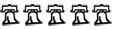
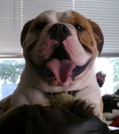
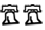
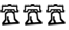
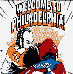
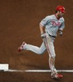

$15/hr is poverty wages
I had employees in florida risking injury on the manufacturing floor for $10/hr and they were told to be grateful for it
It's a disgrace
Archived
Politics: Y'all ready for this?
Re: Politics: Y'all ready for this?
 by td11 » Mon Mar 02, 2020 08:45:05
by td11 » Mon Mar 02, 2020 08:45:05
- td11
- Plays the Game the Right Way
- Posts: 35802
- Joined: Fri Dec 29, 2006 03:04:40
Re: Politics: Y'all ready for this?
 by CalvinBall » Mon Mar 02, 2020 08:50:15
by CalvinBall » Mon Mar 02, 2020 08:50:15
Nah these are kids though. They don't need the money. Just gives them something to do during the school year.
-
CalvinBall - You've Got to Be Kidding Me!
 - Posts: 64951
- Joined: Mon Jul 30, 2007 15:30:02
- Location: Pigslyvania
Re: Politics: Y'all ready for this?
 by jamiethekiller » Mon Mar 02, 2020 08:55:01
by jamiethekiller » Mon Mar 02, 2020 08:55:01
love when my wife comes home from teaching and tells me stories about how her kids had to cut the second half of school because they had to work a shift at one of the chains(pick one, anyone). Since they're relied on in their family to provide for their siblings/parents and in doing so are now failing high school.
be grateful for your 7.25 an hour, punk. you're only a kid after all.
be grateful for your 7.25 an hour, punk. you're only a kid after all.
-

jamiethekiller - Plays the Game the Right Way
- Posts: 26938
- Joined: Sun Dec 31, 2006 03:31:02
Re: Politics: Y'all ready for this?
 by MoBettle » Mon Mar 02, 2020 09:10:00
by MoBettle » Mon Mar 02, 2020 09:10:00
Pushing for $15/hr seems like pretty obvious anchoring, doubt anything more than 11 or 12 and maybe tracking inflation after that would pass.
Two days later I get a text back that says I'm a basketball player and a businessman, not a Thundercat.
-
MoBettle - Plays the Game the Right Way
- Posts: 29294
- Joined: Fri Dec 29, 2006 00:45:37
- Location: All the way up.
Re: Politics: Y'all ready for this?
 by PTOITWCFTPP » Mon Mar 02, 2020 09:17:36
by PTOITWCFTPP » Mon Mar 02, 2020 09:17:36
jamiethekiller wrote:if i ever needed validation for why PTOI is the worst poster on this board
Coming from you, that’s a compliment.
“I don’t coach losers, I only coach winners.” Mike Krzyzewski
Tom Brady bereft on the turf, it has literally been ripped from his grasp
Tom Brady bereft on the turf, it has literally been ripped from his grasp
-
PTOITWCFTPP - You've Got to Be Kidding Me!
- Posts: 66661
- Joined: Sat Jul 18, 2009 17:57:27
Re: Politics: Y'all ready for this?
 by traderdave » Mon Mar 02, 2020 09:41:19
by traderdave » Mon Mar 02, 2020 09:41:19
It will be very interesting to see what the Sanders campaign's position on earned delegates is come the convention if Biden was to overtake him between now and then but still end up short of the 1,991 threshold.
Also, I assume both Warren and Klobuchar know they are finished but are hanging around until after Super Tuesday since their home states are on the slate that day? They will be out by Weds (barring something incredible happening on Tues)?
Also, I assume both Warren and Klobuchar know they are finished but are hanging around until after Super Tuesday since their home states are on the slate that day? They will be out by Weds (barring something incredible happening on Tues)?
-
traderdave - Dropped Anchor
 - Posts: 8451
- Joined: Thu Dec 28, 2006 18:44:01
- Location: Here
Re: Politics: Y'all ready for this?
 by JUburton » Mon Mar 02, 2020 10:03:27
by JUburton » Mon Mar 02, 2020 10:03:27
Pretty much. It'll be Biden and Bernie after Tuesday unless there's somehow a miracle Bloomberg resurgence. If he wants to keep Bernie out then dropping out is his only option too.traderdave wrote:It will be very interesting to see what the Sanders campaign's position on earned delegates is come the convention if Biden was to overtake him between now and then but still end up short of the 1,991 threshold.
Also, I assume both Warren and Klobuchar know they are finished but are hanging around until after Super Tuesday since their home states are on the slate that day? They will be out by Weds (barring something incredible happening on Tues)?
-
JUburton - Space Cadet
 - Posts: 17132
- Joined: Wed May 05, 2010 20:49:25
- Location: Philly
Re: Politics: Y'all ready for this?
 by Bucky » Mon Mar 02, 2020 10:05:20
by Bucky » Mon Mar 02, 2020 10:05:20
likewise if liz wants to keep bernie out she'll stay in
-

Bucky - BSG MVP
- Posts: 58017
- Joined: Fri Dec 29, 2006 19:24:05
- Location: You_Still_Have_To_Visit_Us
Re: Politics: Y'all ready for this?
 by TenuredVulture » Mon Mar 02, 2020 10:06:39
by TenuredVulture » Mon Mar 02, 2020 10:06:39
Bucky wrote:likewise if liz wants to keep bernie out she'll stay in
I wouldnt be surprised if liz didn't stay in to soow Bernie down.
Be Bold!
-
TenuredVulture - You've Got to Be Kidding Me!
- Posts: 53243
- Joined: Thu Jan 04, 2007 00:16:10
- Location: Magnolia, AR
Re: Politics: Y'all ready for this?
 by slugsrbad » Mon Mar 02, 2020 10:07:57
by slugsrbad » Mon Mar 02, 2020 10:07:57
Warren has the money to stick around as a third choice. I think if Bloomberg stays in than maybe she’ll drop out to help Bernie. But if it’s Bernie/Biden she might stay in as the convention choice.
Quick Google shows that GoGo is wrong with regards to the Kiwi and the Banana.
Doll Is Mine wrote:This Ellen DeGeneres look alike on ESPN is annoying. Who the hell is he?
-

slugsrbad - Plays the Game the Right Way
- Posts: 27586
- Joined: Tue Jul 28, 2009 15:52:49
Re: Politics: Y'all ready for this?
 by Grotewold » Mon Mar 02, 2020 10:08:01
by Grotewold » Mon Mar 02, 2020 10:08:01
Brantt wrote:CalvinBall wrote:Why should they not earn 15 an hour? Because they're young and don't need it?
Because his business needs to actually make money to succeed or all of them will be making $0 an hour.
Let's just cut the rate to zero. Jobs galore.
-

Grotewold - BSG MVP
- Posts: 51642
- Joined: Wed Jan 03, 2007 09:40:10
Re: Politics: Y'all ready for this?
 by Augustus » Mon Mar 02, 2020 10:22:31
by Augustus » Mon Mar 02, 2020 10:22:31
Warren probably thinks if she stays in she can emerge as the unity candidate at a contested convention.
Pete's problem (and Klobuchar's) was that you can't run in the moderate lane of the Democratic primary if you can't win African American support. I'm sure he looked at all of Biden's liabilities and saw an opening there. However, I'm wondering if you press the rewind button and he slots himself in to Warren's left and Bernie's right-does he pick up enough of Warren's good government vote, Bernie's youth vote, and Biden's let's get things back to normal vote to have more of an impact? A more progressive message, combined with his youth and his personal story of being gay is a compelling campaign. Instead, he seemed to spend more time saying why other candidate's plans were unworkable than talking about his own ideas. His only constituency in the primary electorate was old white people.
His problem now is that he can't win statewide in Indiana. VP is probably off the table (shocked if the Dem VP is a white guy). He better hope for a Democratic win and lobby for a cabinet post.
Pete's problem (and Klobuchar's) was that you can't run in the moderate lane of the Democratic primary if you can't win African American support. I'm sure he looked at all of Biden's liabilities and saw an opening there. However, I'm wondering if you press the rewind button and he slots himself in to Warren's left and Bernie's right-does he pick up enough of Warren's good government vote, Bernie's youth vote, and Biden's let's get things back to normal vote to have more of an impact? A more progressive message, combined with his youth and his personal story of being gay is a compelling campaign. Instead, he seemed to spend more time saying why other candidate's plans were unworkable than talking about his own ideas. His only constituency in the primary electorate was old white people.
His problem now is that he can't win statewide in Indiana. VP is probably off the table (shocked if the Dem VP is a white guy). He better hope for a Democratic win and lobby for a cabinet post.
- Augustus
- There's Our Old Friend
- Posts: 821
- Joined: Wed Dec 24, 2008 22:11:13
Re: Politics: Y'all ready for this?
 by Werthless » Mon Mar 02, 2020 10:39:08
by Werthless » Mon Mar 02, 2020 10:39:08
MoBettle wrote:Pushing for $15/hr seems like pretty obvious anchoring, doubt anything more than 11 or 12 and maybe tracking inflation after that would pass.
Highest it's been was around $11, in today's money. If you take away the need for employers to provide healthcare, by passing medicare for all, that alleviates cost on the employer side. These 2 changes really are linked. That said, it's not the President who decides the federal minimum wage. $15 is quite aggressive for many rural parts of the country.
-

Werthless - Space Cadet
- Posts: 12968
- Joined: Tue Apr 01, 2008 16:07:07
Re: Politics: Y'all ready for this?
 by Gimpy » Mon Mar 02, 2020 10:52:17
by Gimpy » Mon Mar 02, 2020 10:52:17
Augustus wrote:Warren probably thinks if she stays in she can emerge as the unity candidate at a contested convention.
Pete's problem (and Klobuchar's) was that you can't run in the moderate lane of the Democratic primary if you can't win African American support. I'm sure he looked at all of Biden's liabilities and saw an opening there. However, I'm wondering if you press the rewind button and he slots himself in to Warren's left and Bernie's right-does he pick up enough of Warren's good government vote, Bernie's youth vote, and Biden's let's get things back to normal vote to have more of an impact? A more progressive message, combined with his youth and his personal story of being gay is a compelling campaign. Instead, he seemed to spend more time saying why other candidate's plans were unworkable than talking about his own ideas. His only constituency in the primary electorate was old white people.
His problem now is that he can't win statewide in Indiana. VP is probably off the table (shocked if the Dem VP is a white guy). He better hope for a Democratic win and lobby for a cabinet post.
My first guess was that his donors told him that if he wants to get funded in future elections, he had to drop out so Biden has a better shot at beating Bernie.
I could see him as a VP pick for Biden. He’s a white guy, yes, but he’s also young and gay and is a good public speaker (without actually saying anything) so I could see a lot of voters identifying with him.
Regardless, I think he has a bright future. I’m curious to see what his next step is if he isn’t the VP pick or in a cabinet post assuming a Democrat wins this year.
-
Gimpy - Space Cadet
- Posts: 15670
- Joined: Mon Mar 28, 2011 19:11:47
Re: Politics: Y'all ready for this?
 by thephan » Mon Mar 02, 2020 10:59:41
by thephan » Mon Mar 02, 2020 10:59:41
I made $7.25/hr while in college a million years ago and it was a good part-time wage for a college kid. University was certainly cheaper, and this helped me meet my needs (I did have a few other concurrent jobs to either supplement hours or build career relevant skills). If I had to live on $7.25/hour after college it would not have been pleasant and that would have been without any thoughts of having more adult responsibilities.
Unfortunately the argument that the "part-time" job is not a permanent career solution is a fallacy. There are more then plenty easy examples of people at the lower end of the economic spectrum working 2, 3 or more jobs trying to make a life. Those people are often part of a family who are all contributing to the shared pot to simply get by. There is no money or time to take these "hand up" jobs to convert to any advanced education to "better themselves".
Also, it is no secret that a number of these jobs are also populated by seniors who cannot get by with out some job to augment their retirement income.
Bottom line is that the McJob is not often a path to greater things for a large part of the employees.
Side Note: Aldie, Target, and others are advertising jobs starting at over $12/hour in my area. It is a cost of doing business, but $20K annual does not go far with our cost of living, if you can get there.
Unfortunately the argument that the "part-time" job is not a permanent career solution is a fallacy. There are more then plenty easy examples of people at the lower end of the economic spectrum working 2, 3 or more jobs trying to make a life. Those people are often part of a family who are all contributing to the shared pot to simply get by. There is no money or time to take these "hand up" jobs to convert to any advanced education to "better themselves".
Also, it is no secret that a number of these jobs are also populated by seniors who cannot get by with out some job to augment their retirement income.
Bottom line is that the McJob is not often a path to greater things for a large part of the employees.
Side Note: Aldie, Target, and others are advertising jobs starting at over $12/hour in my area. It is a cost of doing business, but $20K annual does not go far with our cost of living, if you can get there.
yawn
-
thephan - BSG MVP
- Posts: 18749
- Joined: Thu Jun 07, 2007 15:25:25
- Location: LOCKDOWN
Re: Politics: Y'all ready for this?
 by thephan » Mon Mar 02, 2020 11:14:19
by thephan » Mon Mar 02, 2020 11:14:19
I heard a Tommy Tuberville ad. He is running to be the nominee for Alabama Senate. Full of raging guitars, promises to be a Trump henchman and a voice over that is ripped right out of pro wrestling.It would be funny if it weren't 'Bama.
yawn
-
thephan - BSG MVP
- Posts: 18749
- Joined: Thu Jun 07, 2007 15:25:25
- Location: LOCKDOWN
Re: Politics: Y'all ready for this?
 by TenuredVulture » Mon Mar 02, 2020 11:23:48
by TenuredVulture » Mon Mar 02, 2020 11:23:48
Werthless wrote:MoBettle wrote:Pushing for $15/hr seems like pretty obvious anchoring, doubt anything more than 11 or 12 and maybe tracking inflation after that would pass.
Highest it's been was around $11, in today's money. If you take away the need for employers to provide healthcare, by passing medicare for all, that alleviates cost on the employer side. These 2 changes really are linked. That said, it's not the President who decides the federal minimum wage. $15 is quite aggressive for many rural parts of the country.
Keep in mind, raising the minimum wage is popular, even in lower income red states (assuming Arkansas isn't atypical)--raising our minimum wage first to 9.25 and then to $11 over two years won overwhelmingly (something like 60-40) on a referendum. The usual suspect chamber of commerce types didn't seem to even try to stop it. Some in the state legislature tried to roll it back, but it went nowhere. This seems to indicate that most businesses aren't really having a problem paying the new wage--few seem to publicly complaining. Indeed, their biggest problem seems to be finding people who can show up on time and pass a drug test.
Keep in mind, we are surround by states with a lower minimum wage. It will be interesting when Lil' Vulture comes back in the summer--I'm wondering how tough it will be for her to find a job if her old job at the BBQ place doesn't work out.
Be Bold!
-
TenuredVulture - You've Got to Be Kidding Me!
- Posts: 53243
- Joined: Thu Jan 04, 2007 00:16:10
- Location: Magnolia, AR
Re: Politics: Y'all ready for this?
 by TomatoPie » Mon Mar 02, 2020 11:49:49
by TomatoPie » Mon Mar 02, 2020 11:49:49
1. Regarding VEEP, any of the 3 remaining old white guys will likely need a female and/or person of color. Kamala is perfect, plus charisma.
2. Regarding min wage, there are legitimate arguments about whether it should be zero, $7.25, $11, $15, or even higher. The $1.75 min wage I earned in 1974 is equivalent to $9.16 today.
A fundamental question about the min wage is should it be a living wage? Is there any room in employment for jobs that pay less than the amount for a person to support shizzelf or family?
Another question is - if indeed the market rate for a wage is below what an adult requires for self-sufficiency, who should make up the difference? Family? Church? Andrew Yang? The employer? People that Liz Warren deems to be too successful?
In a competitive global economy, why lay the burden on the employer? Especially if the employer is a small shop or store or local business. When an employer is forced by law to pay above-market rates for labor, the business is less competitive. Further, some entry-level jobs are eliminated OR priced too high for the precisely the kind of people who most need entry-level jobs.
What would President TP favor?
While my gut tells me that we should eliminate the minimum wage, it is plenty low right now, and removing it would indeed open the door for some employers to exploit some labor markets.
I'd keep it where it is, but I'd do something at the federal government level that mirrors the EIC. For all persons over age 21, federal tax dollars will be used to get you to a net (indexed for inflation) wage of $15/hr.
This is in keeping with programs that, while far from perfect, are effective in helping needy Americans - public housing, Medicaid, food stamps. Help for those who need it, not a blanket program that brings in everybody.
I'd much rather target subsidies to those that truly need it rather than paying suburban teens an above-market rate for summer jobs, or, even worse, paying everybody including Bill Gates and Mike Bloomberg $1000 a month.
2. Regarding min wage, there are legitimate arguments about whether it should be zero, $7.25, $11, $15, or even higher. The $1.75 min wage I earned in 1974 is equivalent to $9.16 today.
A fundamental question about the min wage is should it be a living wage? Is there any room in employment for jobs that pay less than the amount for a person to support shizzelf or family?
Another question is - if indeed the market rate for a wage is below what an adult requires for self-sufficiency, who should make up the difference? Family? Church? Andrew Yang? The employer? People that Liz Warren deems to be too successful?
In a competitive global economy, why lay the burden on the employer? Especially if the employer is a small shop or store or local business. When an employer is forced by law to pay above-market rates for labor, the business is less competitive. Further, some entry-level jobs are eliminated OR priced too high for the precisely the kind of people who most need entry-level jobs.
What would President TP favor?
While my gut tells me that we should eliminate the minimum wage, it is plenty low right now, and removing it would indeed open the door for some employers to exploit some labor markets.
I'd keep it where it is, but I'd do something at the federal government level that mirrors the EIC. For all persons over age 21, federal tax dollars will be used to get you to a net (indexed for inflation) wage of $15/hr.
This is in keeping with programs that, while far from perfect, are effective in helping needy Americans - public housing, Medicaid, food stamps. Help for those who need it, not a blanket program that brings in everybody.
I'd much rather target subsidies to those that truly need it rather than paying suburban teens an above-market rate for summer jobs, or, even worse, paying everybody including Bill Gates and Mike Bloomberg $1000 a month.
Kill the chicken to scare the monkey
-
TomatoPie - Dropped Anchor
- Posts: 5184
- Joined: Sat Mar 24, 2007 22:18:10
- Location: Delaware Valley
Re: Politics: Y'all ready for this?
 by traderdave » Mon Mar 02, 2020 11:56:15
by traderdave » Mon Mar 02, 2020 11:56:15
From CNN:
Former South Bend, Indiana, Mayor Pete Buttigieg is weighing whether to endorse Joe Biden after exiting the Democratic presidential race late Sunday night and later speaking on the phone with the former vice president and former President Barack Obama. An endorsement for Biden is likely, two people close to Buttigieg say, but whether he makes the decision before Super Tuesday is unclear.
Former South Bend, Indiana, Mayor Pete Buttigieg is weighing whether to endorse Joe Biden after exiting the Democratic presidential race late Sunday night and later speaking on the phone with the former vice president and former President Barack Obama. An endorsement for Biden is likely, two people close to Buttigieg say, but whether he makes the decision before Super Tuesday is unclear.
-
traderdave - Dropped Anchor
- Posts: 8451
- Joined: Thu Dec 28, 2006 18:44:01
- Location: Here
Re: Politics: Y'all ready for this?
 by Brantt » Mon Mar 02, 2020 12:02:02
by Brantt » Mon Mar 02, 2020 12:02:02
traderdave wrote:From CNN:
Former South Bend, Indiana, Mayor Pete Buttigieg is weighing whether to endorse Joe Biden after exiting the Democratic presidential race late Sunday night and later speaking on the phone with the former vice president and former President Barack Obama. An endorsement for Biden is likely, two people close to Buttigieg say, but whether he makes the decision before Super Tuesday is unclear.
Here comes the machine vs Bernie.
Would Obama dare endorse Biden before tomorrow?
"I don't think we're too far apart, Tom Brady and myself." - Matt McGloin
- Brantt
- Dropped Anchor
- Posts: 8291
- Joined: Sun Dec 31, 2006 12:38:19